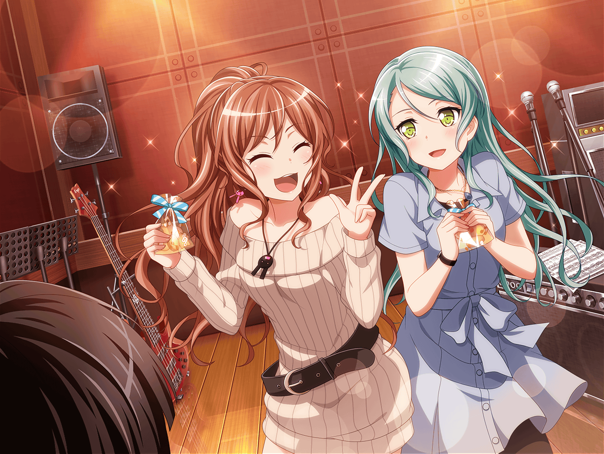

一週間後
スタジオ
リサ
この曲……友希那がこの短期間で作ってきたの！？
友希那
ええ……私達がRoseliaでいられるように。
その気持ちを曲にしたかった
あこ
わあ……っ！ カッコイイ！！
あこ、今すぐ演奏したい！
紗夜
素敵な曲ですね。珍しく私も宇田川さんと同じく、
今すぐにでも演奏したい気持ちです
あこ
ええー！？ 珍しく、なんて言わなくても〜……
リサ
あっはは！ 紗夜、照れてるだけだって。
これ、がんばって次のライブに間に合わせようよ
燐子
はい……！ ライブまであまり時間はありませんが……
新しい……わたし達を象徴する曲になりそうですし……
友希那
今日からライブに向けて、集中していきましょう
あこ
はーーいっ！
リサ
……あの、さ。ちょっとみんなにこれ、食べてほしいんだけど

あこ
わあ……っ！ クッキーだっ！
友希那
これは……リサが作ってきてくれたの？
リサ
ううん、アタシと紗夜で作ったの！
紗夜
……
燐子
氷川さんも……そうだったんですね……
リサ
いや〜、いつ出そうかってすっごく迷ったんだけどさ。
なんとなく、今が一番いいかなと思って……
紗夜
クッキーには練習パフォーマンスを向上させる
効果が見込めますので、練習前に食べるのがいいかと
友希那
いただくわ。……うん、おいしい
あこ
うんっ、すっごくおいしい〜！ あこ、またクッキーが
食べられてうれしいよ〜！ リサ姉、紗夜さん、ありがとうっ！
リサ
だってさ。やったね、紗夜！
紗夜
さあ、クッキーの効果がきれないうちに、早く
練習をはじめましょう
燐子
はい……っ！
 帰り道
帰り道
あこ
友希那さんっ、今日のあこの演奏、どうでしたか？
友希那
ええ、悪くなかったわ。
ただ、いくつか問題点があって……
リサ
……なんか、こういう時間久しぶりだね
紗夜
そうですね
燐子
なんだか……安心しました……５人が……
元通りになって……
紗夜
そうですね。湊さんが戻ってきてからすぐに
練習を再開して。今井さんは、ライブの手はずを整えてくれて
リサ
いや〜、ほら。やっぱりアタシってこういう役回りが
向いてるんだって、改めて思ったよ
紗夜
今までと変わらない役回りで動いてくれているけれど、
その根幹にあるものは、以前と全く違うものなはずよ
リサ
うん、そう思う！
アタシも、少しは成長できたのかな。けど、ずるいよ、紗夜
紗夜
何が？
リサ
友希那を連れ戻してくれたのは、紗夜でしょ？
アタシ、気づかないと思った〜？
紗夜
別に……あなたみたいに甘やかしたり、
答えを与えるようなことはしてないわ
リサ
ひどいなあ、も〜！
……けど、ありがと。紗夜の言うとおり、アタシが
連れ戻してたら意味がなかったよね
燐子
友希那さんは必ず戻ってくると……
力強く言ってくれた氷川さん……とても……素敵でした……
紗夜
湊さんには借りがあったから、それを返したかっただけです
リサ
ははっ、も〜、照れちゃって！ けど、やっぱりアタシ達が
前に進めたのは紗夜のおかげが大きいよ！
燐子
前に、進む……
紗夜
私だけじゃない。これはメンバー全員が……
燐子
そ、そうだ……っ！
リサ
り、燐子……？
燐子
あ、あの……！ あ、明日！ 新しく作ったみなさんの
衣装……一度、回収させてもらえないでしょうか……？
紗夜
何か、問題があったの？
燐子
いえ！ その……アクセントになるものが
もう１つほしいと……思っていたんですけど……
燐子
今……それが思いついて……
あっ！ もうお店がしまっちゃうかも……！
燐子
こ、これからアクセサリーパーツのお店に行ってくるので……
すみません、こ、これで失礼します……っ！
リサ
えっ！？ り、燐子！？
紗夜
……仕方ない。衣装の件は私達から湊さんと宇田川さんにも
伝えましょう
リサ
うん、そうしよう。
どんなモチーフをつけてくれるのか、楽しみだな